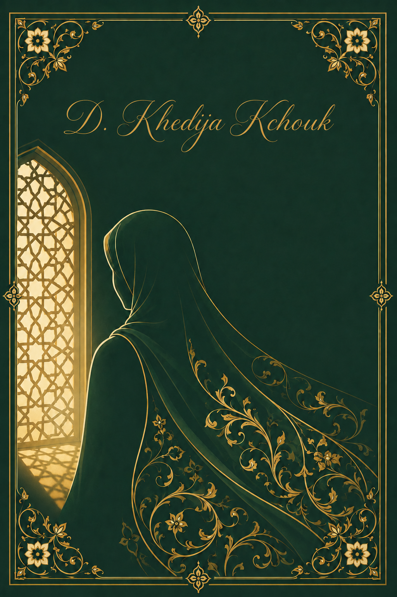
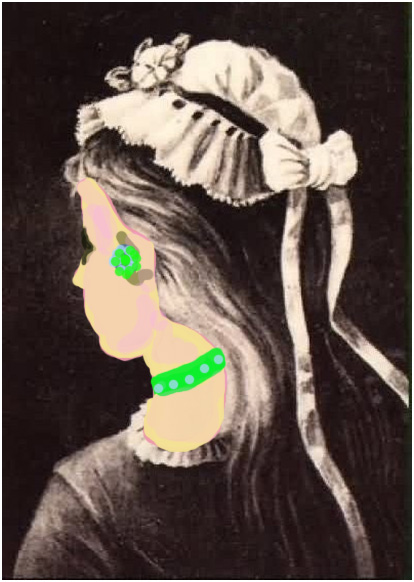
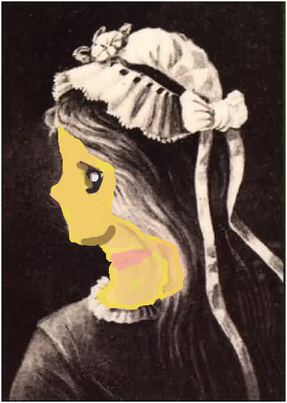

La femme en Islam
Dignité, égalité et responsabilités

Avant-propos
De toutes les questions par lesquelles on prétend juger l'islam, celle de la femme est sans doute la plus exposée. On y mêle, souvent en toute bonne foi, ce qui relève de la religion et ce qui relève de la coutume ; on confond le texte et la pratique, le principe et l'abus. Ce livre voudrait, modestement, aider à démêler les deux.
Le parti pris en est simple. Pour parler de la femme « en Islam », on s'appuie d'abord sur les sources de l'islam — le Coran et la tradition prophétique authentifiée — et non sur les pratiques de telle ou telle société, qui peuvent les trahir autant que les servir. Les versets sont donnés en arabe avec leur référence et leur traduction ; les paroles prophétiques sont citées dans leur langue d'origine. Les citations d'auteurs occidentaux ont, autant que possible, été vérifiées et sourcées ; celles qui se sont révélées apocryphes ont été écartées.
Le cheminement est le suivant : on confronte d'abord la condition de la femme dans les civilisations qui ont précédé ou entouré l'islam ; on expose ensuite son statut dans la législation musulmane, puis l'écart entre ce statut et le vécu des sociétés ; on répond enfin aux objections les plus courantes, avant de donner à voir, par le Coran, par les épouses du Prophète et par de grandes figures de l'histoire, le visage concret de la femme en Islam.
Nul ne détient sur ce sujet un savoir parfait. Ces pages n'ont d'autre ambition que d'ouvrir les yeux au-delà de la première impression — car, on le verra, les apparences trompent.
Introduction
La femme en Islam : voilà un sujet de ceux que l'on n'aborde jamais sans appréhension. Très débattu, souvent polémiqué, il demeure pourtant d'une brûlante actualité. Nul ne saurait prétendre en détenir un savoir parfait et complet, et l'on ne le prétend pas dans ces pages. Mais il est permis en islam, et même vivement recommandé, de s'entretenir d'un sujet afin de se corriger mutuellement et de se guider les uns les autres : le musulman n'est-il pas considéré comme « le miroir du musulman », lui reflétant sa réalité et son état d'âme ? C'est dans cet esprit, de cœur à cœur, que ce livre a été écrit.
Avant d'entrer dans le vif du sujet, une digression s'impose.
Dans le patrimoine littéraire arabe, nous avons depuis l'époque omeyyade un ouvrage écrit par un sage prosateur du nom d'ابن المقفع. C'est un ouvrage référence que nul critique littéraire ne peut omettre de signaler en parlant des livres à portée philosophique. Il s'agit du très célèbre livre intitulé « كليلة ودمنة ». Dans cet ouvrage, ابن المقفع rapporte l'histoire — très symbolique — d'un roi qui, cherchant la Vérité, a voulu mettre à l'épreuve tous les sages de son pays. Pour cela il les a réunis et, leur couvrant les yeux d'un bandeau, il leur a présenté un éléphant (animal qu'ils n'ont jamais vu auparavant). Puis il leur a demandé de lui présenter cet animal, de lui en parler comme ils l'ont aperçu, chacun de son côté. Le résultat était très révélateur de la nature humaine, puisque le premier sage, n'accédant qu'à la première patte de l'animal, lui a présenté celui-ci comme un grand pilier capable de bouger ; le deuxième, touchant la trompe de l'éléphant, y a vu un grand tuyau articulé ; le troisième, les mains sur les défenses éléphantesques, lui a présenté la Vérité comme étant deux grandes cornes… et ainsi de suite se succédaient les différentes définitions et présentations de cette « étrange » vérité… En fin de compte, le roi, déçu de la nature humaine, a fini par admettre que la connaissance absolue n'est pas accessible à l'être humain et que, tous, nous ne pouvons voir et connaître, donc présenter, que la chose qui nous est accessible et qui nous touche le plus…
Pourquoi cette anecdote et quel rapport a-t-elle avec notre sujet ? L'image suivante peut nous apporter une réponse :


Que voit-on dans cette image ? La réponse peut paraître simple et évidente ; elle ne l'est pourtant pas. On peut y voir le dos d'une belle jeune fille coiffée d'un chapeau, mais on peut également y voir le visage d'une vieille femme presque de face : en allant au-delà de la première vision et en surpassant la première impression, les deux images apparaissent tour à tour.
Telles sont les aberrations visuelles, trompeuses et insidieuses ; les aberrations mentales le sont bien davantage. Lorsqu'on parle de la femme en Islam, tous les discoureurs tiennent-ils les mêmes propos ? Ne faut-il pas plutôt se souvenir, comme le dit le proverbe arabe, que :
tout récipient ne déborde que du liquide qu'il contient ?
C'est-à-dire que si l'on remplit un récipient d'eau, il n'en sortira que de l'eau ; si l'on y verse de l'huile, il ne s'en répandra que de l'huile, et ainsi de suite.
La conclusion à tirer de tout ce qui précède, c'est qu'il est humainement normal de ne voir le monde qui nous entoure qu'à travers nous-mêmes, à travers notre vécu et à travers notre culture. Nous savons tous que la nature humaine est la même, mais nous savons aussi que la culture est multiple. Elle est d'autant plus diversifiée qu'il y a de communautés. Ne nous étonnons donc pas si les points de vue diffèrent d'un groupe social à un autre et d'une civilisation à une autre.
L'ignorance d'une part, l'incompréhension voulue ou non d'autre part, ont fait que le sujet de la femme en islam est devenu le tremplin de presque toutes les attaques portées à notre religion. Il est vrai que nous n'avons fait qu'encourager cela : par notre ignorance en un premier temps, par notre silence en un deuxième temps, et par notre ambivalence en un troisième temps — ambivalence entre la théorie et la pratique, et dualité entre Islam et tradition.
Cette liberté accordée à tout homme, qu'il soit de conviction islamique ou non, a fait que jamais l'islam n'a combattu aucune civilisation : jamais l'islam n'a détruit une communauté, même si elle le refuse catégoriquement. Les preuves de cette affirmation sont plus que multiples. Il suffit de voir les coptes en Égypte, les chrétiens au Liban, et même les juifs en Espagne… Si l'islam a combattu ces non-musulmans, comment auraient-ils pu survivre, se développer et continuer à vivre en terre d'Islam ? Comparons l'attitude des musulmans à celle des chrétiens hier aux Amériques : n'ont-ils pas décimé les Incas et les Indiens au bout de quelques décennies d'occupation ? Et les juifs aujourd'hui, ne procèdent-ils pas à un « nettoyage ethnique » en Palestine ?
Ceci dit, si nous rencontrons dans telle ou telle société des pratiques qui nous semblent « bizarres », si nous désapprouvons telle ou telle attitude, ne nous plaisons pas à condamner ces mentalités, et gardons-nous de jeter la pierre aux autres, surtout si notre demeure est faite de verre…
Après ce long détour, revenons au sujet principal : la femme en Islam. Et puisque
c'est-à-dire que c'est « par opposition que les choses se distinguent » — que, par exemple, on ne réalise l'éclat de la couleur blanche qu'en la comparant à l'obscurité du noir —, explorons en un bref tour d'horizon :
- le statut de la femme dans les communautés non musulmanes, dans l'histoire et dans les temps modernes ;
- puis le statut de la femme dans la communauté islamique, entre la législation et le vécu au quotidien.
Qu'en est-il donc de la femme chez les non-musulmans ?
La femme dans les civilisations non musulmanes
Dans les anciennes communautés
Un bref rappel de son statut nous aide à en esquisser le profil.
Dans la Grèce antique, on prête à Pythagore[1] ces mots : « Il y a un principe bon qui a créé l'ordre, la lumière et l'homme. Il y a un principe mauvais qui a créé le chaos, les ténèbres et la femme. »
Dans la civilisation chinoise, les femmes sont comparées aux eaux troubles qui ne procurent à ceux qui les consomment que douleurs et maladies.
Dans la philosophie bouddhiste, la femme n'est rien d'autre qu'un piège tendu à l'homme. Le bonheur et la sagesse ne sont accessibles qu'aux rares heureux qui peuvent les éviter. Il y est dit clairement :
Le salut ne peut jamais être atteint par le côtoiement des femmes, mais plutôt par le célibat et le renoncement à celles-ci.
En Inde, les jeunes filles ne sont autres que la propriété des divinités au service des prêtres. Il est dit dans le Livre de Manou :
Il n'est pas permis à la fille, à la jeune femme ni à la femme âgée de s'adonner chez elles à des occupations autres que celles dont s'occupe l'époux. Durant son enfance, la fille doit à son père obéissance ; durant sa jeunesse, elle doit à son époux une totale soumission. À la mort de celui-ci, elle doit obéir à ses beaux-fils. Aucune indépendance ne peut lui être accordée.
Bien plus, certaines sectes indiennes exigent de la veuve qu'elle se fasse brûler vive à côté de son époux défunt, en guise de fidélité. Si elle refuse cette incinération, toute la communauté se doit alors de lui rendre la vie impossible jusqu'à ce qu'elle consente à se faire incinérer.
Dans la religion judaïque, la femme durant ses menstruations est considérée comme impure. Elle est alors enfermée dans sa demeure ; tout ce qu'elle touchera (nourriture, vêtements, être humain, animaux ou autres) durant cette période sera souillé et considéré comme impur. La Torah précise :
Dans le livre de la Genèse (سفر التكوين), Adam rejette la responsabilité du péché originel sur Ève en disant :
« C'est la femme que Tu as mise à mes côtés qui m'a servi de l'arbre. »
Dans le christianisme, la femme est coupable du même péché ; pour cela, le Père a sacrifié son seul fils et a permis sa crucifixion. L'apôtre Paul écrit (1 Corinthiens 7) :
« Celui qui donne sa fille en mariage a fait une bonne action, mais celui qui l'en prive a fait une meilleure action, puisqu'il est préférable à l'homme de s'abstenir de s'approcher des femmes. »
De tels propos ont conduit certains hommes de l'Église chrétienne à débattre, au fil des siècles, du statut spirituel de la femme.
Il est vrai qu'il faut distinguer entre le christianisme — religion sacrée révélée à Jésus-Christ عليه السلام — et le christianisme — religion officielle — instauré par l'Église à travers les siècles. Ce dogme provient donc moins de Jésus que des écrits des apôtres, des conciles et des prêtres. Il est aussi vrai que ces écrits n'ont fait que perpétuer un modèle historique de domination masculine, dans lequel la force physique et les muscles sont de rigueur, dans lequel le corps prime sur le mental (modèle par ailleurs de toute civilisation « primitive »).
Dans la société contemporaine
En Occident, le statut de la femme a naturellement hérité de cette mentalité. Que les apparences ne nous trompent pas : la femme y est chosifiée. On n'y voit, dans les sociétés capitalistes, presque qu'un corps, ou plutôt qu'un sexe, un simple objet de plaisir. Alfred de Musset[2] lui-même écrit :
« Qu'est-ce, après tout, qu'une femme ? L'occupation d'un moment, une coupe fragile qui renferme une goutte de rosée, qu'on porte à ses lèvres et qu'on jette par-dessus son épaule. Une femme ! C'est une partie de plaisir ! Ne pourrait-on pas dire, quand on en rencontre une : "Voilà une belle nuit qui passe" ? »
Dans le communisme, c'est un moyen de production. Dans le modèle socialiste, la Russie est en effet restée une société dominée par les hommes à la tête du parti, même si l'on a envoyé une astronaute femme dans l'espace.
Il est dit que les langues sont le reflet de la mentalité de ceux qui les parlent. Pourquoi alors la langue française a-t-elle du mal à accepter le féminin dans certains substantifs et à admettre des appellations telles que « madame la ministre » ou encore « madame la docteuresse » ?
Ainsi donc, et malgré les écrits de nombreux penseurs « révolutionnaires », le statut de la femme en Occident n'a pas beaucoup évolué. Parmi les noms reconnus dans ce mouvement féministe, citons la très célèbre Simone de Beauvoir. Et chose impensable, c'est que cette même Simone de Beauvoir qui, malgré sa renommée de femme émancipée, admet implicitement dans ses dires l'infériorité de la gent féminine en déclarant[3] :
« On ne naît pas femme, on le devient. »
Ainsi la femme est restée en Occident un être plus matériel que spirituel, un corps plus qu'une âme… Sinon, pourquoi une femme en Occident ressent-elle une certaine gêne à se montrer en public sans fard ni maquillage ? Ne lui est-il pas trop difficile de se faire accepter à travers autre chose que sa beauté physique et à travers son attirance — disons le mot — sexuelle ? N'est-ce pas là une reconnaissance implicite de l'importance accordée à son physique au dépens de son mental ?
Les mentalités n'ont donc guère changé, ou presque. À cet effet, citons quelques phrases de penseurs célèbres, d'hommes de lettres, de philosophes et d'artistes occidentaux.
À propos de la femme en général
Certains humoristes français lui dérobent son âme. Pierre Desproges prétend ainsi : « Dépourvue d'âme, la femme est dans l'incapacité de s'élever vers Dieu. En revanche, elle est en général pourvue d'un escabeau qui lui permet de s'élever vers le plafond pour faire les carreaux. C'est tout ce qu'on lui demande. » (« Plus je connais les hommes, plus j'aime mon chien ; plus je connais les femmes, moins j'aime ma chienne. »)
À propos de son esprit
Arthur Schopenhauer, dans son Essai sur les femmes[4] (1851), écrit : « Les femmes restent leur vie durant de grands enfants ; elles ne voient jamais que ce qui est sous leurs yeux et s'en tiennent au présent. »
Jean Anouilh n'en laissera pas entendre moins, puisque pour lui une femme n'a aucune opinion et change tout le temps d'avis. Il conseille donc : « Pourquoi perdre son temps à vouloir contredire son épouse ? Il est beaucoup plus simple d'attendre qu'elle ait changé d'avis. »
Anatole France ne reconnaît à la femme aucune intelligence, puisque : « La tête, chez les femmes, n'est pas un organe essentiel. »
À propos de sa morale
Sénèque la dépouille de toute morale en affirmant : « Une femme qui pense seule pense à mal. » Il la soupçonne de ruses et de perfidie, en disant dans ses Tragédies[5] : « La femme, ou elle aime ou elle hait : il n'y a pas de troisième voie. Une femme qui pleure est un mensonge : deux genres de larmes dans les yeux des femmes en même temps, les unes pour la douleur, les autres pour la ruse. »
De même, Voltaire[6], en homme de pensée, doute beaucoup que la femme puisse être fidèle. Si elle le devient, c'est qu'elle y est contrainte par son âge avancé. Il dit : « Les femmes ressemblent aux girouettes : elles se fixent quand elles se rouillent. »
La femme ne vivrait sa féminité qu'à travers le sexe et la débauche. Alphonse Allais en témoigne, en la taxant d'être toujours sujette aux tentations de la chair : « Joli paradoxe : la femme est le chef-d'œuvre de Dieu, surtout quand elle a le Diable au corps. »
La nature féminine serait encline à l'ingratitude et à tous les maux ; c'est pourquoi elle aimerait, par nature, faire souffrir l'homme. Marcel Pagnol nous le fait comprendre en disant : « Il y a trois choses qu'une femme ne pardonne pas à un homme : le bien qu'elle lui a fait, le mal qu'il lui a fait, et surtout le mal qu'elle n'a pu lui faire. »
À propos de son empreinte sur l'homme
Romain Rolland attire l'attention sur l'impact néfaste de la femme sur l'homme, puisqu'il lui suffit de la côtoyer pour perdre son esprit. Il dit : « On n'a pas tort de dire que la femme est la moitié de l'homme ; car un homme marié n'est plus qu'une moitié d'homme. »
À propos du mariage
Avec de telles opinions, il est donc logique que les penseurs occidentaux condamnent le mariage, en lançant la boutade : « Le mariage est la seule guerre au cours de laquelle on dort avec son ennemi. »
Voltaire accuse le mariage de n'être qu'une entreprise vouée à l'échec et menant à la faillite ; il dit : « Le mariage est la seule aventure ouverte aux lâches. »
George Bernard Shaw remarque : « On compare souvent le mariage à une loterie. C'est une erreur, car à la loterie on peut parfois gagner. »
Dans cet ordre d'idées, il nous serait possible de citer des dizaines et des dizaines de phrases semblables. Concluons cette première partie par deux citations particulièrement révélatrices.
La première est la phrase très célèbre d'une « dame » du monde britannique, Lady Mary Wortley Montagu[7], qui, bien qu'elle soit femme très émancipée, ne s'est nullement gênée pour affirmer : « Je me console d'être femme en songeant que, de la sorte, je n'en épouserai jamais une. »
La deuxième phrase, nous la devons au dramaturge Sacha Guitry[8], qui prétend : « Si la femme était bonne, Dieu en aurait une. » Phrase qui veut tout dire…
En France, du temps de la guerre de 14-18, les femmes se sont vues obligées de prendre la place des hommes dans les manufactures, vu que les hommes étaient mobilisés dans les tranchées ; mais la guerre une fois finie, la domination masculine a repris le dessus. Aux Nations unies, ne parle-t-on pas des « droits de l'homme », expression qui perpétue de fait l'idée d'une priorité masculine d'emblée, au lieu de dire « les droits de la personne », plus respectueuse de la réalité des deux sexes ?
Ceci en ce qui concerne la femme en Occident. Qu'en est-il alors de la femme dans l'Islam ?
La femme dans la civilisation musulmane
Comme précédemment, nous passerons en revue la condition féminine en Islam en deux parties distinctes :
- le statut de la femme dans la législation islamique ;
- puis la condition féminine dans les sociétés musulmanes.
La femme dans la législation musulmane
Nature
Rappelons d'abord qu'en Islam la femme est l'égale de l'homme, dans le sens où elle a été créée de la même nature que lui.
« C'est Lui qui vous a créés d'un seul être, dont Il a tiré son épouse, pour qu'il trouve de la tranquillité auprès d'elle. »
Ou encore dans la sourate « Les femmes », verset 1 :
« Ô hommes ! Craignez votre Seigneur qui vous a créés d'un seul être, et a créé de celui-ci son épouse, et qui de ces deux-là a fait répandre (sur la terre) beaucoup d'hommes et de femmes. Craignez Allah au nom duquel vous vous implorez les uns les autres, et craignez de rompre les liens du sang. Certes, Allah vous observe parfaitement. »
Dans un hadith prophétique, il est dit que les femmes ne sont autres que les sœurs jumelles des hommes :
qu'elles ne peuvent nullement être impures, puisque le croyant ne l'est jamais :
La femme étant pour l'homme la tranquillité espérée et l'aboutissement de sa quête terrestre :
« Et parmi Ses signes, Il a créé de vous, pour vous, des épouses pour que vous viviez en tranquillité avec elles, et Il a mis entre vous de l'affection et de la bonté. Il y a en cela des preuves pour des gens qui réfléchissent. »
Responsabilité (égalité et spécificité)
Dans la vision islamique, la femme n'est nullement responsable de ce que chrétiens et juifs appellent « péché originel ». Il est également à remarquer qu'une lecture grammaticale du texte coranique des versets 117 à 122 de la sourate « Taha », parlant de la descente d'Adam sur terre, nous révèle ce qui suit :
« Alors Nous dîmes : "Ô Adam, celui-là est vraiment un ennemi pour toi et ton épouse. Prenez garde qu'il vous fasse sortir du Paradis, car alors tu seras malheureux. (117) Car tu n'y auras pas faim ni ne seras nu, (118) tu n'y auras pas soif ni ne seras frappé par l'ardeur du soleil." (119) Puis le Diable le tenta en disant : "Ô Adam, t'indiquerai-je l'arbre de l'éternité et un royaume impérissable ?" (120) Tous deux (Adam et Ève) en mangèrent. Alors leur apparut leur nudité ; ils se mirent à se couvrir avec des feuilles du paradis. Adam désobéit ainsi à son Seigneur et il s'égara. (121) Son Seigneur l'a ensuite élu, agréé son repentir et l'a guidé. »
Ainsi, le complément du verbe وسوس est le pronom هو qui se rapporte à Adam, puisque c'est un pronom singulier et non pas un pronom duel ou pluriel. Il est également intéressant de remarquer que le verbe تشقى est conjugué lui aussi au singulier et non pas au duel, puisqu'il n'est pas dit تشقيان. Donc, grammaticalement parlant, l'islam s'adresse à l'homme seulement lorsqu'il le prévient des conséquences de son éventuelle désobéissance à ALLAH et lui fait remarquer qu'il en souffrira… De remords ou bien de travaux à accomplir sur terre ? Et pourquoi lui et non pas Ève ? Telle est la question.
Une fois sur terre, la femme en islam est considérée, par contre, aussi responsable que l'homme de ses propres actes. Ses responsabilités vis-à-vis du Divin sont de croire en Lui, de croire en ses prophètes, ses anges, ses livres sacrés, au jour du jugement dernier et en la destinée.
Vis-à-vis de sa propre personne, la femme doit suivre les instructions de l'islam et s'abstenir de succomber aux tentations de l'illicite. Dans sa morale, dans sa conduite, dans sa vie en général et même dans sa tenue vestimentaire, elle doit se référer à la religion islamique. S'il est dit en langue française que « l'habit ne fait pas le moine », il est dit en islam qu'il ne peut y avoir de dualité entre l'intérieur et l'extérieur, entre la foi et la conduite. Le verset coranique :
« Ô Prophète ! Dis à tes épouses, à tes filles et aux femmes des croyants de ramener sur elles leurs grands voiles : elles en seront plus vite reconnues et éviteront d'être offensées. Allah est Pardonneur et Miséricordieux. »
Le verset coranique, disons-nous, l'incitant à mettre le voile, la femme musulmane, à notre humble avis, doit s'y faire, tant qu'elle est libre de vivre son islam ; elle n'a nullement le choix de s'y opposer de sa propre initiative :
« Il n'appartient pas à un croyant ou à une croyante, une fois qu'Allah et Son messager ont décidé d'une chose, d'avoir encore le choix dans leur façon d'agir. Et quiconque désobéit à Allah et à Son messager s'est égaré, certes, d'un égarement évident. » (Les Coalisés, 36)
Il est également affirmé que :
Celui qui imite une communauté en fait partie.
Le Prophète ﷺ dit aussi :
N'est pas considéré des nôtres celui qui imite d'autres que nous. N'imitez ni les juifs ni les chrétiens.
C'est à la femme aussi de s'éduquer et de s'instruire, puisque :
Vis-à-vis de sa famille la plus proche et la plus éloignée, vis-à-vis de la société, de toute l'humanité voire de toute la création, la femme est responsable des mêmes devoirs que son frère l'homme, puisque le Prophète ﷺ dit :
Vous êtes tous des pasteurs et tous responsables. Le dirigeant est pasteur et responsable des dirigés ; l'homme est pasteur des membres de sa famille et responsable des personnes sous sa tutelle ; la femme est pastoure dans la demeure conjugale et responsable de tout ce qui lui incombe ; le serviteur est pasteur des biens de son maître et il en est responsable. Tous, vous êtes aussi bien les uns que les autres pasteurs et responsables.
C'est à elle, en un deuxième temps, que revient essentiellement le rôle de l'éducation des enfants. À elle de les sensibiliser à l'islam et au texte coranique avant même leur naissance, en leur faisant écouter sa psalmodie. À elle de les préserver des mauvaises positions devant leurs futurs camarades de classe, en réfléchissant bien au prénom qu'elle leur donnera : s'abstenant de les appeler par des prénoms qui portent à confusion, tel que أنس (facilement transformable en « ânesse »), évitant aussi صديق (qui deviendrait « sadique »), خولة (qui donnerait « Koala »), إيمان (qu'on pourrait transcrire en « hymen »). À elle aussi de leur choisir des prénoms à connotation arabe et islamique. Évitons donc les prénoms facilement démystifiables, tels que لندة، لينة ou encore سامي (qui deviendrait « Samy »)…
Une fois jeune enfant, à elle de leur choisir les bons jouets éducatifs, ceux qui les élèveraient dans la voie d'ALLAH : attention alors aux poupées « Barbie » par exemple, et à la morale qu'elles diffusent. Sa nudité est à condamner, et sa relation avec son petit copain « Ken » aussi. Optons pour la nouvelle génération des poupées « فـلّـة » avec son foulard islamique et ses invocations journalières. Attention aux autres moyens de distraction et à ce que « consomment » nos enfants : des héros tels que les « Tortues Ninja », « Titeuf » et « Oggy et les cafards » ne les mèneront pas très loin… Nous avons d'autres véritables héros ; étudions alors leurs biographies et suivons leurs traces… Tout cela sans oublier qu'à partir de ses sept ans, il faut inciter l'enfant à faire la prière, ainsi qu'à s'intéresser aux sports utiles — الرماية والسباحة وركوب الخيل : le tir à l'arc, la natation et l'équitation —, et non pas la boxe ou le football…
À la femme aussi de faire très attention à l'éducation qu'elle donne à ses enfants : qu'elle soit juste et qu'elle traite pareillement fille et garçon. Le Prophète ﷺ a vu un jour un père embrassant son fils et le mettant sur ses genoux, puis mettant sa propre fille devant lui ; le Prophète ﷺ lui fit la remarque :
N'est-il pas préférable que tu les traites équitablement ?
Il lui dit aussi :
Soyez équitables même dans les baisers.
Soyez équitables dans vos dons à vos enfants.
À la femme aussi, en un troisième temps, le rôle de surveiller son époux et de le préserver autant qu'elle peut de commettre l'illicite. Cela lui est possible de par sa nature féminine, plus encline à la foi et à la croyance que celle de son frère l'homme. Que cela ne paraisse pas une aberration ou une prétention féminine, puisque le Docteur الشيخ القرضاوي lui-même l'a remarqué et l'a confirmé dans une de ses conférences.
En dehors de sa petite famille, la femme a la responsabilité de faire connaître à ses voisins non musulmans la vraie morale islamique. Cette morale est régie par le hadith prophétique qui, parlant de la conduite à suivre avec les voisins, note :
Celui qui claque la porte au nez de son voisin, de peur de se mêler à lui ou de partager avec lui quelques biens, n'est pas considéré comme croyant. N'est pas croyant non plus celui dont le voisin n'est pas à l'abri de ses nuisances. Sais-tu quels sont les droits du voisin ? C'est de l'aider et de lui faire des emprunts s'il te le demande. S'il s'appauvrit, tu le secours. S'il tombe malade, tu lui rends visite. S'il lui arrive une bonne nouvelle, tu l'en félicites. S'il lui arrive malheur, tu lui présentes tes condoléances. S'il décède, tu assistes à son enterrement. Sauf sa permission, tu n'élèves pas les murs de ta demeure au-delà de la sienne, pour ne pas lui couper le vent. Tu ne le gênes pas par les odeurs de ta cuisine, sauf si tu lui en réserves une part. Si tu achètes des fruits, tu lui en offres ; sinon, tu les apportes chez toi secrètement, et que ton enfant ne sorte pas avec, pour ne pas provoquer l'envie des siens.
Telle est la responsabilité de la femme en islam, responsabilité qui la met sur le même plan que l'homme. À elle aussi, si elle s'en acquitte équitablement, les mêmes récompenses que celles qui seront accordées aux hommes. Pour cela, ALLAH, dans sa justice divine, égalise entre homme et femme en leur promettant pareillement :
« Quiconque, qu'il soit homme ou femme, fait une bonne œuvre tout en étant croyant, Nous lui ferons vivre une bonne vie. Et Nous les récompenserons, certes, en fonction des meilleures de leurs actions. »
Le verset 35 de la sourate « Les Coalisés » ne laisse aucun doute en ce qui concerne la parfaite égalité entre homme et femme ; il dit :
« Les Musulmans et Musulmanes, croyants et croyantes, obéissants et obéissantes, loyaux et loyales, endurants et endurantes, craignants et craignantes, donneurs et donneuses d'aumône, jeûnants et jeûnantes, gardiens et gardiennes de leur chasteté, invocateurs et invocatrices souvent d'Allah : Allah a préparé pour eux un pardon et une énorme récompense. »
« Les croyants et les croyantes sont alliés les uns des autres. Ils commandent le convenable, interdisent le blâmable, accomplissent la Ṣalāt, acquittent la Zakāt et obéissent à Allah et à Son messager. Voilà ceux auxquels Allah fera miséricorde, car Allah est Puissant et Sage. »
C'est là l'essence même de la foi, le Prophète ﷺ disant :
Celui qui voit d'entre vous une injustice est tenu de la corriger par son action ; s'il ne peut le faire, alors par la parole ; sinon, en la désapprouvant dans son for intérieur, et c'est là le degré moindre de la foi.
La religion musulmane a donc été révélée aussi bien à l'homme qu'à la femme. Tous deux sont donc aussi responsables l'un que l'autre et s'égalisent devant ALLAH, le meilleur d'entre eux étant le plus croyant et le plus fidèle aux instructions islamiques.
S'il est vrai que la femme est aussi responsable que l'homme, il n'en est pas moins vrai qu'elle a ses propres spécificités qui la distinguent de son conjoint. Mais cette parfaite égalité entre les deux sexes ne va pas à l'encontre de la spécificité de chacun d'entre eux. En effet, ALLAH, dans Sa divinité, reconnaît à la femme une certaine tendance à s'emporter, à être quelquefois excessive dans ses désirs. Cela est d'autant plus vrai qu'elle subit, durant certains cycles de sa vie, des changements d'humeur et des variations hormonales. On pourrait croire que cette différence reconnue à la femme en Islam va la taxer de quelques défauts. Il n'en est rien, puisque l'Islam s'adresse à l'homme pour le mettre en garde d'une éventuelle mésentente conjugale, et l'incite vivement à ne pas en tenir compte, en lui rappelant que, malgré les apparences, son épouse est certainement un bien qu'il faut précieusement garder, comme le rappelle le verset 19 de la sourate « Les femmes » :
« Ô les croyants ! Il ne vous est pas licite d'hériter des femmes contre leur gré. Ne les empêchez pas de se remarier dans le but de leur ravir une partie de ce que vous aviez donné, à moins qu'elles ne viennent à commettre un péché prouvé. Et comportez-vous convenablement envers elles. Si vous avez de l'aversion envers elles durant la vie commune, il se peut que vous ayez de l'aversion pour une chose où Allah a déposé un grand bien. »
La tradition prophétique nous rapporte l'infinie finesse et la gentillesse avec lesquelles le Prophète ﷺ traitait les femmes. Parmi ses paroles, son célèbre conseil :
Ô Anjacha, ménage les belles coupes en conduisant les montures (c'est-à-dire n'accélère pas le pas, pour leur épargner d'être ballottées par la houle qu'elles ressentiront dans leurs هودج, ces cabanes fixées sur le dos des chameaux).
Le Prophète ﷺ dit dans un autre contexte :
Le meilleur d'entre vous est le meilleur avec son épouse.
Dans son dernier discours, il n'a pas cessé d'attirer l'attention des musulmans sur leurs obligations vis-à-vis de leurs épouses, de peur qu'ils ne les bafouent. Il conseille :
Il recommande à l'homme de s'armer de patience chaque fois que son épouse lui semble dans l'erreur. Il instaure la règle de conduite à suivre en ces termes :
Il explique ces recommandations par le fait que la nature féminine soit fantasque ; il dit :
Recommandez-vous les uns aux autres de faire le bien aux femmes, car elles ont été créées d'une côte courbe, dont l'irrégularité se trouve essentiellement dans sa partie haute. Si tu t'obstines à la redresser, tu la casseras ; et si tu la laisses, elle restera courbe. Aussi, acceptez-les telles qu'elles sont, et vous vous en réjouirez. Recommandez-vous les uns aux autres de faire le bien aux femmes.
Dans sa vie familiale et conjugale, le Prophète ﷺ a été repris bien des fois par ses épouses. Il est rapporté dans les deux صحيح, celui de مسلم et celui de البخاري, que son compagnon عمر بن الخطاب رضي الله عنه a été un jour contredit par son épouse et que, refusant cette attitude de sa part, il l'a réprimandée en s'étonnant : « Comment oses-tu me contredire, espèce d'antipathique ! » ; sur ce, elle lui répond (d'égale à égal) : « Pourquoi ne le ferais-je pas, puisque le Prophète ﷺ, qui est certes mieux que toi, se fait reprendre par ses épouses ? » Là, عمر رضي الله عنه ne trouva rien à dire et s'avoua vaincu.
Malgré donc cette égalité entre les deux sexes, disons-nous, ALLAH a ordonné aux hommes d'être indulgents vis-à-vis de la femme et de lui faire le bien, puisque cela peut les faire accéder au paradis — et quelle meilleure récompense ! Le Prophète ﷺ dit :
« Tout homme qui subviendra aux besoins de deux filles jusqu'à leur majorité ressuscitera, le jour du jugement dernier, aussi proche de moi que ces deux-là » — et il joignait son index à son majeur.
Dans un autre hadith :
« Tout homme ayant trois ou deux filles, ou encore deux sœurs, et étant pieux avec elles et leur faisant le bien, alors sa récompense sera le paradis. »
Le Prophète ﷺ, par amour et par respect pour ses épouses, et malgré toutes ses responsabilités civiques et spirituelles, les aidait dans leurs activités ménagères tant qu'il le pouvait. Cette vision du monde et de la vie conjugale s'est répercutée sur ses compagnons. Ainsi, quelques années plus tard, nous trouvons ce même عمر بن الخطاب — qui, auparavant orgueilleux de sa virilité, ne tolérait pas les remarques de son épouse — se faisant tout petit devant elle et acceptant toutes ses remarques désobligeantes, tout en étant le calife des musulmans, à la tête donc de l'empire islamique après le décès du Prophète ﷺ. En voici une anecdote.
Il est rapporté dans les livres d'histoire qu'un homme, las du caractère acariâtre de son épouse, décida d'aller porter plainte contre elle auprès du calife عمر. Il se dirigea donc vers la demeure de celui-ci ; mais, de loin, il entendit — malgré lui — la voix de l'épouse du calife qui le maltraitait. Déçu et résigné à ce fléau féminin, il rebroussa chemin ; et c'est à ce moment-là qu'apparut عمر au seuil de sa demeure. En calife soucieux d'être à la disposition de tout son peuple, il l'appela et l'interrogea sur la raison de sa venue et de son retour. L'homme lui expliqua ce qu'il en était en disant :
« Je venais me plaindre de mon épouse auprès de l'Émir des croyants, et je l'entends se faire traiter de la sorte par sa propre épouse ; alors je me suis dit : que suis-je en comparaison de lui, et à quoi bon chercher refuge auprès de lui ? »
عمر lui dit alors une phrase devenue depuis une règle dans la jurisprudence islamique :
« Mon frère, je supporte mon épouse pour tout ce qu'elle me fait : elle me prépare à manger, me fait mon pain, me lave mon linge, allaite mon fils, sans qu'elle soit obligée de faire tout cela ; et puis elle me préserve de commettre le péché de l'adultère. Pour tout cela, je la supporte. »
L'homme dit alors :
« Moi aussi, ô Émir des croyants. »
Alors عمر lui conseilla :
« Supporte-la alors, mon frère, ce n'est là qu'une courte période. »
Ce statut de la femme en islam lui a conféré une place de choix dans sa communauté. Le Prophète ﷺ lui a réservé une journée par semaine pour lui enseigner les préceptes de l'islam ; il lui a aussi ménagé une porte accédant à la mosquée pour lui épargner les bousculades. Il lui reconnut de grandes qualités mentales et morales, lui permettant d'accéder aux différentes sciences religieuses ; il dit :
Dans cette communauté, la femme participa même à la guerre sainte, depuis غزوة حنين. أم حرام rapporte que le Prophète ﷺ lui apprit un jour qu'il avait vu en rêve des musulmans à bord d'un navire entreprenant un voyage dans le but de faire la guerre sainte ; أم حرام demanda au Prophète d'invoquer ALLAH سبحانه وتعالى afin qu'elle en fasse partie, et le Prophète ﷺ lui apprit alors qu'elle serait parmi les premières à prendre le large sur ce navire.
Sur le plan politique, السيدة عائشة رضي الله عنها joua un rôle primordial dans le conflit qui opposa علي بن أبي طالب à معاوية بن أبي سفيان رضي الله عنهما.
Le rôle éducatif et scientifique de la femme en Islam n'est pas non plus à négliger, puisque nous trouvons des femmes d'une grande notoriété dans les différents domaines de la connaissance humaine. البلاذري, dans son ouvrage فتوح البلدان, nous en donne une très longue liste. Parmi les femmes enseignantes, il cite 80 noms célèbres, dont أم المؤيد زينب, السيدة نفيسة بنت أبي محمد et مؤنسة الأيوبية. La première étant l'enseignante du très célèbre historien ابن خلكان, la deuxième celle de الإمام الشافعي et la dernière celle du célèbre grammairien ابن حيان, pour ne citer que ces trois dames.
Ainsi est le statut de la femme en islam. Nous pouvons y voir l'explication du verset coranique cité précédemment, dans lequel le verbe تشقى se rapporte seulement à l'homme : puisqu'en islam c'est à l'homme de travailler pour subvenir aux besoins matériels de sa famille, quant à la femme, elle n'est même pas obligée de faire le ménage chez elle ou d'allaiter son propre enfant. C'est ce qu'affirment la plupart des juristes islamiques, en se référant aux dires de عمر بن الخطاب رضي الله عنه. Parmi eux, l'auteur de البحر الرائق, celui de الفتاوى الظهيرية, et même الإمام الشافعي qui, pour ces raisons, demande à l'époux de dédommager son épouse pour les travaux ménagers qu'elle accomplirait.
Ceci en ce qui concerne la femme en tant que membre de la société en général. En ce qui concerne son statut en tant que mère, la place que lui réserve l'islam est une place de choix, puisqu'elle y est valorisée trois fois plus que son compagnon le père. Le hadith du Prophète — أمك ثم أمك ثم أمك — est tellement connu que nous ne voyons plus l'utilité de le rappeler.
Conclusion / synthèse
Nous avons signalé précédemment, en plus de cette égalité, que femme et homme ont chacun leurs propres spécificités. Il en découle donc, pour chacun d'entre eux, de nouvelles responsabilités et de nouveaux champs d'action.
En effet, vu la nature extrêmement affective, délicate et patiente de la femme, dépassant de loin les capacités masculines dans ce domaine, ALLAH a confié à cette dernière la tâche la plus importante qui soit sur terre : la tâche d'enfanter et d'élever les enfants. À l'homme, de nature réfléchie, raisonnable et combative, Il a attribué le rôle de défendre sa famille, de subvenir à tous ses besoins et de la protéger. Homme et femme se complètent donc en Islam, et ce que l'un peut, l'autre ne le peut. Mais tous deux doivent œuvrer dans le même sens et tendre vers les mêmes objectifs : réaliser خلافة الله في الأرض.
En quelques mots, cette خلافة se fait, du point de vue théorique et philosophique, en faisant le bien et en s'abstenant de faire le mal. Elle se fait aussi, du point de vue pratique, en prêchant la foi musulmane. Comment faire donc cette الدعوة الإسلامية, ou prédication ?
La prédication se fait sommairement de deux façons complémentaires, correspondant chacune au degré de notre foi individuelle ainsi qu'à notre condition personnelle. En effet, on peut prêcher activement comme on peut prêcher d'une façon passive. Si la prédication active peut se révéler, pour certaines personnes, difficile — nécessitant beaucoup d'efforts, d'éloquence, de psychologie, de polémique, et même de voyages (conditions qui correspondraient généralement davantage à l'homme qu'à la femme) —, la prédication passive, ou implicite, est beaucoup plus accessible à la nature féminine. Elle n'est pas pour autant moins efficace ; elle peut se révéler même plus agissante et plus parlante. En effet, en vivant son Islam réellement et en observant sa morale propre en toute situation, la femme réalise par sa conduite ce que prêche son frère l'homme. Ainsi, les faits deviennent plus éloquents que toutes les paroles, et les attitudes plus parlantes que n'importe quel discours. La femme, dans ce domaine, est incontournable. Son rôle est beaucoup plus marqué que celui de l'homme, par le fait que c'est elle qui forge sa propre famille et qui agit, à travers elle, sur toute la société, puis sur toute l'humanité.
La condition féminine dans les sociétés musulmanes
Telle est la condition de la femme en islam. Qu'en est-il donc de sa condition dans notre société, ou peut-être serait-il plus juste de dire « dans nos sociétés » ?
Il y a certaines notions qui peuvent nous sembler naturelles, relevant même de l'évidence, à un point que nous éprouvons une certaine gêne à les évoquer. Mais ces mêmes notions semblent être moins évidentes pour quelques personnes, d'où la nécessité de nous y attarder.
En effet, notre communauté arabo-musulmane, bien qu'elle émane d'une seule et unique religion, diffère d'une région à une autre, voire d'un pays à un autre. Cette différence provient de la spécificité particulière à chaque région géographique, de son héritage culturel et de ses traditions propres, que l'Islam, dans sa grande tolérance, n'a pas combattus.
Pour expliquer l'impact des traditions dans la communauté musulmane, et pour ne citer qu'un seul chercheur orientaliste qui en a parlé, référons-nous au comte de Gobineau[9]. Auteur de l'ouvrage « Les Religions et les philosophies dans l'Asie centrale », qui, d'ailleurs, ne s'est jamais converti à l'Islam, il affirme que l'islam est synonyme de liberté, qu'il laisse à toute communauté le choix d'organiser sa vie comme elle l'entend, tant que ce choix ne va pas à l'encontre du توحيد, ou unicité d'ALLAH :
« Ce que l'Islam a eu en vue, presque uniquement, c'est de recommander la notion d'un Dieu Unique, se révélant par des prophètes. Voilà l'alpha et l'oméga de sa théologie. Pourvu qu'on reconnaisse ces deux points, l'Islam est satisfait, et la plus grande liberté est laissée à la conscience de l'homme qui les a confessés. Cet homme eût-il d'ailleurs les opinions les plus différentes de celles des autres musulmans, il est toujours considéré comme fidèle, tant qu'il n'abjure pas officiellement. Là, l'Islam n'a pas arraché une seule des plantes vénéneuses ou utiles qu'il a trouvées en floraison avant lui ; il n'en a empêché aucune de naître après son avènement. La preuve en est que, si les hérésies ont commencé de bonne heure pour le christianisme, elles ont été plus précoces encore pour l'Islam ; Mahomet lui-même les a vues se produire, et elles se sont montrées bien fécondes. »
Ainsi, la condition de la femme musulmane au Soudan, par exemple, diffère beaucoup de la condition de la femme musulmane aux Amériques, bien que toutes deux puissent être aussi bonnes musulmanes l'une que l'autre.
En survolant les différentes communautés musulmanes, on admet avec une grande amertume qu'elles ont stigmatisé la femme du poids de leurs coutumes et de leurs traditions antéislamiques. Ces traditions, en un mot, ne diffèrent pas beaucoup de celles des Arabes de la Jahiliyya (période d'avant l'avènement de l'islam). ALLAH سبحانه وتعالى nous décrit la mentalité de ces hommes comme suit :
« Et lorsqu'on annonce à l'un d'eux une fille, son visage s'assombrit et une rage profonde l'envahit. (58) Il se cache des gens, à cause du malheur qu'on lui a annoncé. Doit-il la garder malgré la honte ou l'enfouira-t-il dans la terre ? Combien est mauvais leur jugement ! »
Une telle attitude ne provient que d'un manque de foi et d'un mécontentement indigne du musulman. Comme nous l'avons évoqué au début de cet ouvrage en rappelant que :
nous sommes en mesure de dire que les hommes — pères, frères, conjoints, juristes et autres — ont presque tous eu la même vision misogyne vis-à-vis de la femme. Expliquons ces entorses faites à la loi islamique.
Certaines personnes, lisant dans le texte coranique :
« Les hommes ont autorité sur les femmes, en raison des faveurs qu'Allah accorde à ceux-là sur celles-ci, et aussi à cause des dépenses qu'ils font de leurs biens. Les femmes vertueuses sont obéissantes (à leurs maris) et protègent ce qui doit être protégé, pendant l'absence de leurs époux, avec la protection d'Allah. Et quant à celles dont vous craignez la désobéissance, exhortez-les, éloignez-vous d'elles dans leurs lits et frappez-les. Si elles arrivent à vous obéir, alors ne cherchez plus de voie contre elles, car Allah est certes Haut et Grand. »
Ces personnes n'ont vu dans ce verset que deux termes : « autorité » et « frappez-les ». Par « autorité », ils comprennent « dictature et despotisme » ; par « frappez-les », ils entendent l'autorisation de battre leurs épouses. Les juristes ont pourtant expliqué le premier terme par la détention de la عصمة, c'est-à-dire le pacte de la vie conjugale : généralement, si la femme ne demande pas à son futur époux de se réserver à elle-même cette عصمة, elle lui reviendra d'office. Ils ont aussi bel et bien expliqué que ce « fameux » « frappez-les » ne signifie nullement « battez-les », mais plutôt « essayez de les attirer vers vous par les plaisirs sexuels », puisque le verbe ضرب en arabe veut dire « frapper » mais aussi « avoir des rapports sexuels ». Les exégèses et les interprétations, même les plus superficielles de ce verset coranique, précisent pourtant bien que cette « correction » infligée à la femme ne peut se faire qu'avec le bâtonnet du سواك, et sans que cela cause à la femme la moindre trace ou le moindre bleu corporel.
D'autres personnes ont entendu le hadith dans lequel le Prophète ﷺ dit :
Les femmes sont sujettes à des manques en ce qui concerne la raison et la religion.
Ces hommes se sont plu dans ce hadith et l'ont compris de la façon dont ils comprendraient le verset coranique :
« Malheur donc à ceux qui prient (4) tout en négligeant (et retardant) leur Ṣalāt. »
c'est-à-dire en s'arrêtant au milieu de la phrase, à :
« Malheur donc à ceux qui prient. »
On voit ici jusqu'où peut aller la bêtise humaine, puisque le Prophète ﷺ termine ce hadith en expliquant que ce « manque » signifie simplement que le témoignage de la femme est, dans certains cas, moins important que celui de l'homme, et que pendant son cycle menstruel elle ne peut pas faire la prière, tandis que l'homme est tenu de la pratiquer tous les jours.
Ces mêmes hommes ont lu :
« Restez dans vos foyers et ne vous exhibez pas à la manière des femmes d'avant l'Islam (Jāhiliyah). Accomplissez la Ṣalāt, acquittez la Zakāt et obéissez à Allah et à Son messager. Allah ne veut que vous débarrasser de toute souillure, ô gens de la maison du Prophète, et veut vous purifier pleinement. » (Les Coalisés)
Ainsi que le hadith :
La prière de la femme dans sa demeure est meilleure que sa prière dans sa cour ; sa prière dans sa chambre, meilleure que celle faite dans sa demeure.
Ces hommes n'ont vu en cela qu'une restriction faite à la femme de quitter sa demeure. Lorsque أسماء بنت يزيد الأنصارية vint voir le Prophète ﷺ pour lui dire :
le Prophète ﷺ lui répondit :
Ces hommes n'ont pas voulu comprendre de ces paroles que les tâches incombant à la femme dans le couple sont aussi graves de conséquences, aussi importantes et vitales à la vie de famille que la guerre sainte. Ils se sont obstinés à comprendre qu'il faut interdire à la femme l'accès à toute autre chose que les tâches ménagères.
Conclusion
Quoi qu'il en soit, tel est le statut de la femme en Islam et telle était la place qu'elle est censée occuper. Si, dans certaines sociétés musulmanes, la tradition est en relation conflictuelle avec la religion, il est clair que tout musulman et toute musulmane doivent, de par leur conviction religieuse et leur foi, de par le verset coranique qui déclare ليس للمسلم الخيرة في رفض ما أنزل الله تعالى, dénoncer cette pratique et la fustiger. Si, par contre, cette tradition n'est pas à l'encontre de la législation islamique, il leur est permis, dans ce cas précis, de l'adopter telle qu'elle est, de la modifier ou même de l'abolir. On ne peut en aucun cas leur imposer notre propre vision du monde ni nos coutumes personnelles. Nous n'avons pas non plus le droit de les juger ni de les sous-estimer. Ne considérons donc pas la société qui permet à la femme d'occuper le poste de dirigeant comme supérieure à celle où celle-ci est réduite aux travaux des champs ou aux travaux ménagers. Car, pour fonder une société, toutes les tâches sont aussi nécessaires les unes que les autres. Subvenir aux besoins de son enfant, bien l'élever et lui assurer une bonne éducation : voilà les fondements d'une société épanouie et heureuse, où toute personne trouve sa place et répond aux attentes de l'autre, sans rivalité ni conflit, sans haine ni mépris. La valeur de tout être humain ne se rapporte nullement, en Islam, au poste qu'il occupe dans la société, ni à sa fortune ou à son prestige. Ceux qui se réfèrent à ces valeurs éphémères sont, aux yeux de l'Islam, dans l'erreur. Nos valeurs sont autres et notre morale est différente. Notre morale islamique nous enseigne que la vraie valeur des humains, celle qu'il faut toujours chercher à acquérir, est la valeur de la piété :
Il y a loin du dire au faire — فرق ما بين القول والفعل
Contre vents et marées — رغم الداء والأعداء
« C'est par quelque miséricorde de la part d'Allah que tu (Muḥammad) as été si doux envers eux ! Mais si tu étais rude, au cœur dur, ils se seraient enfuis de ton entourage. »
Réponses aux objections
On a coutume d'adresser à l'islam un certain nombre d'accusations récurrentes au sujet de la femme. Reprenons-les une à une.
Le mariage
Le mariage ne peut se faire en Islam contre l'accord explicite des deux conjoints. Il n'est donc nullement permis d'effectuer un mariage forcé.
D'après Ibn Abbas : une jeune fille vierge vint trouver le Messager d'Allah ﷺ et lui rapporta que son père l'avait mariée contre son gré ; le Prophète ﷺ lui laissa alors le choix.
D'après Jabir : un homme maria sa fille vierge sans son consentement ; elle vint trouver le Prophète ﷺ, qui annula ce mariage.
D'après Aïcha : une jeune fille vint la voir et dit : « Mon père m'a mariée au fils de son frère pour rehausser son rang, et je n'en voulais pas. » Aïcha lui dit : « Attends jusqu'à ce que vienne le Messager d'Allah ﷺ. » Quand il vint, elle l'informa ; il fit alors venir le père et remit la décision à la jeune fille. Celle-ci dit : « Ô Messager d'Allah, j'accepte ce qu'a fait mon père ; je voulais seulement que les femmes sachent que les pères n'ont aucun droit en cette affaire. »
L'âme — la personne — est plus précieuse que les biens. Or, le père ne dispose pas des biens de sa fille majeure sans son autorisation et son consentement ; comment donc la contraindrait-il à épouser quelqu'un dont elle ne veut pas ? C'est ce qu'a confirmé le savant Ibn Taymiyya, en s'appuyant sur ce hadith authentique :
« On ne marie pas la vierge sans solliciter sa permission, ni la femme déjà mariée sans son accord. » On dit : « Ô Messager d'Allah, la vierge est pudique et n'ose parler. » Il répondit : « Son consentement est son silence. »
La polygamie
C'est une solution proposée par l'islam à une société démographiquement en difficulté. Cela peut se voir après une guerre qui aurait diminué de beaucoup le nombre des hommes par rapport aux femmes. C'est aussi la solution humaine proposée à un couple en difficulté à cause de la stérilité de l'épouse ou d'une maladie incurable l'empêchant d'assumer son rôle de conjointe. C'est enfin la solution légale proposée à un homme qui ne se suffit pas d'une seule épouse, pour le préserver de commettre l'adultère.
Tout en déclarant la polygamie licite, l'islam enserre l'homme en le mettant en garde contre le très grand péché qu'il pourrait commettre en prenant une deuxième épouse et en agissant injustement vis-à-vis de l'une de ses deux épouses. Dans la polygamie, comme en toute autre chose sur terre, il y a du bien et du mal ; cela dépend, bien entendu, du point de vue où l'on se place : c'est un bien pour la société en difficulté, pour l'homme et pour la deuxième épouse (puisqu'il vaut mieux avoir un mari à partager que de ne pas en avoir du tout) ; cependant, cela est généralement considéré comme un mal pour la première épouse. C'est un mal relatif qu'elle peut empêcher en posant, dans son propre contrat de mariage, la condition que son époux restera monogame. S'il rompt cette condition, elle a alors le choix de demander le divorce.
Par ailleurs, l'islam n'incite pas à la pratique systématique de ce « remède » : il l'autorise sous certaines conditions seulement, et il restreint le nombre d'épouses à quatre, contrairement à d'autres traditions où ce nombre était illimité. Il est aussi bon de rappeler que plusieurs prophètes — tels qu'Abraham, le roi David et son fils Salomon — étaient polygames. En outre, la religion chrétienne n'exige la monogamie que chez les évêques et les diacres : il faut que l'évêque soit « mari d'une seule femme » (1 Timothée 3:2), de même que les diacres (1 Timothée 3:12).
Remarquons aussi que la plupart des personnes qui condamnent la polygamie en islam ne se gênent pas pour avoir plusieurs aventures hors mariage. Pourquoi donc cette dualité et cette contradiction ?
Le divorce
L'islam reconnaît le divorce comme solution finale à une situation conjugale insupportable. Le Prophète ﷺ qualifie ainsi le divorce :
« Parmi les choses permises, la plus détestée d'Allah est le divorce. »
Cette annulation du mariage se fait généralement par décision bilatérale : lorsque les deux époux se mettent d'accord pour se séparer, le juge prononce la séparation. Dans d'autres cas, le divorce peut résulter d'une décision unilatérale ; il doit alors suivre une procédure d'environ trois mois, pour permettre aux deux époux une éventuelle réconciliation. En Islam, l'homme a le droit de divorcer ; la femme peut obtenir ce droit par son contrat de mariage, mais aussi par une décision d'un tribunal qui lui rend sa liberté en cas de plainte de sa part. La femme peut donc toujours se séparer de son époux lorsque celui-ci est incapable de remplir ses devoirs conjugaux, ou pour toute autre raison valable.
Citons le cas de جميلة, qui vint voir le Prophète ﷺ pour lui avouer qu'elle n'aimait plus son époux, sans lui reprocher le moindre tort. Le Prophète ﷺ lui rappela que son mari lui avait donné un verger comme مهر, et lui proposa de le lui rendre si elle voulait se séparer de lui ; ce qu'elle fit, et le divorce fut prononcé.
L'égalité entre les deux sexes
Dès la naissance, l'islam défend la fille en stigmatisant certaines pratiques païennes à son égard. Le Coran rapporte (sourate « Les abeilles », 58-59) :
« Et lorsqu'on annonce à l'un d'eux une fille, son visage s'assombrit et une rage profonde l'envahit. (58) Il se cache des gens, à cause du malheur qu'on lui a annoncé. Doit-il la garder malgré la honte ou l'enfouira-t-il dans la terre ? Combien est mauvais leur jugement ! »
Les Arabes de la Jahiliyya enterraient vivantes leurs filles pour les préserver de tout déshonneur éventuel — pratique très condamnée en islam :
« et qu'on demandera à la fillette enterrée vivante (8) pour quel péché elle a été tuée. »
D'autre part, l'islam exige qu'on traite équitablement fille et garçon. Le Prophète ﷺ dit :
Soyez équitables avec vos enfants, même dans vos baisers.
Il promet le paradis comme récompense à tout père ayant deux ou trois filles, qui les traite bien et les éduque bien. Devenue épouse, la femme a droit au respect et à toute la gentillesse de son époux. Mère, son importance s'accroît, puisque ses enfants lui doivent trois fois plus de vénération qu'à leur père. On rapporte qu'un homme demanda au Prophète ﷺ : « À qui dois-je bonne compagnie ? » — « À ta mère », répondit-il. « À qui d'autre ? » — « À ta mère. » « À qui d'autre ? » — « À ta mère. » « Puis à qui ? » — « À ton père. » Pourquoi tant de reconnaissance ? Le Coran l'explique :
« Et Nous avons enjoint à l'homme de la bonté envers ses père et mère : sa mère l'a péniblement porté et en a péniblement accouché ; et sa gestation et son sevrage durent trente mois. Puis, quand il atteint sa pleine maturité et atteint quarante ans, il dit : "Ô Seigneur, inspire-moi pour que je rende grâce au bienfait dont Tu m'as comblé, ainsi qu'à mes père et mère, et pour que je fasse une bonne œuvre que Tu agrées. Et fais que ma postérité soit de moralité saine. Je me repens à Toi, et je suis du nombre des Soumis." »
Le témoignage de la femme
Les jugements des tribunaux s'établissent selon les déclarations des témoins et sur la base de tout ce qui constitue une preuve évidente. Il est des cas où le juge ne se limite pas à la concordance des témoignages : il lui faut aussi compter sur l'expérience des témoins, sur leurs qualités et leurs compétences. Allah nous dit à cet effet (« Les abeilles », 43) :
« Nous n'avons envoyé avant toi que des hommes auxquels Nous avons fait des révélations. Demandez donc aux gens du rappel si vous ne savez pas. »
D'où une certaine diversité dans les positions qui relèvent du témoignage de la femme.
Il y a des questions où le témoignage de la femme est égal à celui de l'homme, sans la moindre distinction. Le grand imam محمود شلتوت dit :
« Le Coran décide de l'égalité de la femme et de l'homme en ce qui concerne les témoignages de l'imprécation mutuelle (li'ān). Ces témoignages ont été établis pour juger entre le mari et son épouse quand il l'accuse sans témoin : quatre témoignages de l'homme, suivis de l'auto-malédiction s'il était menteur, sont équivalents à quatre témoignages de la femme, suivis de l'auto-malédiction si son mari disait la vérité. »
Il y a des questions où le témoignage de l'homme est égal à celui de deux femmes. C'est le cas des transactions financières et commerciales :
« Ô les croyants, quand vous contractez une dette à échéance déterminée, mettez-la par écrit ; et qu'un scribe l'écrive, entre vous, en toute justice. […] Faites-en témoigner par deux témoins d'entre vos hommes ; et à défaut de deux hommes, un homme et deux femmes parmi ceux que vous agréez comme témoins, en sorte que si l'une d'elles s'égare, l'autre puisse lui rappeler. […] Cela est plus équitable auprès d'Allah, plus droit pour le témoignage et plus à même d'écarter les doutes. »
Considérer que deux femmes équivalent à un homme, au moment où se pose la question de la confiance, ne signifie pas que la femme ne serait pas saine d'esprit. La raison en est tout autre : d'après الشيخ محمد عبده, les transactions et les échanges commerciaux n'étaient généralement pas les affaires des femmes, de sorte que, dans ce genre d'affaires, leur mémoire est plus courte parce qu'elles ne s'y intéressent pas spécialement. C'est la nature humaine : on ne se rappelle facilement que des affaires qui nous occupent. Aussi, si certaines femmes travaillent dans ce domaine et qu'elles sont dignes de confiance, le juge peut considérer que leur témoignage est égal à celui des hommes.
Il y a enfin des cas où le témoignage de la femme dépasse celui de l'homme : lorsque les hommes ne peuvent être en mesure d'assister à certains événements, telles les naissances, les menstruations, ou ce qui se rapporte à l'intimité des femmes :
« Et les femmes divorcées doivent observer un délai de viduité de trois menstrues ; et il ne leur est pas permis de taire ce qu'Allah a créé dans leurs ventres, si elles croient en Allah et au Jour dernier. »
Dans ce cas, on accepte le témoignage de la femme seule, en s'appuyant sur la véracité de sa croyance et en éveillant sa conscience religieuse et morale. ALLAH a donc donné le dernier mot à la femme dans les affaires qui la concernent, tout en la prévenant de l'ampleur de la punition si jamais elle ment.
L'héritage
La fille hérite de la moitié du fils. Ce n'est là ni une injustice, ni une inégalité de principe, encore moins une discrimination. Une explication s'impose pour démontrer que cette « inégalité » est fondée en justice. La législation islamique a tenu compte ici de l'ensemble des droits de la femme, et non du seul droit d'héritage. La femme possède une propriété séparée sur laquelle nulle autre personne n'a de droit (ni père, ni frère, ni mari, ni fils). En outre, elle a droit à l'entretien de la part des hommes (père et frère tant qu'elle n'est pas mariée, puis mari, puis fils). Elle reçoit aussi de son mari le مهر (qui, avant l'islam, allait à son père, et qui lui revient en Islam). On voit donc que la femme a moins de besoins matériels à satisfaire que son frère l'homme : il est dès lors normal qu'elle ait un héritage moindre que le sien.
L'excision
On dit que toute traduction est une trahison ; on en a justement ici un bel exemple, car en arabe on ne parle pas d'excision mais de circoncision. L'excision est une pratique établie par فرعون et tout à fait interdite en islam. La circoncision de la femme n'est usitée que par quelques tribus d'Afrique noire et par ceux qui les ont imitées ; il semble même que cette pratique soit, le plus probablement, une survivance de coutumes tribales que l'islam a tenu à modifier. En islam, il ne s'agit nullement de l'ablation d'un organe pour diminuer l'appétit sexuel — bien au contraire. Le Prophète ﷺ dit :
« Ô Umm Atiyya, effleure et ne supprime pas : le visage en sera plus éclatant et l'époux plus comblé. »
Les femmes dans le Coran
On reproche parfois à l'islam d'ignorer la femme. Le Coran, pourtant, en parle abondamment : il lui consacre des récits entiers, donne son nom à des sourates, et fait d'elle, à plusieurs reprises, le modèle même de la foi. Loin d'être effacée, la femme y est tantôt souveraine, tantôt prophète au berceau de l'histoire sainte, tantôt conscience qui interpelle Dieu — et Dieu lui répond.
Maryam, la seule femme nommée
Fait remarquable : sur l'ensemble du Coran, une seule femme est désignée par son prénom — Maryam, c'est-à-dire Marie, mère de Jésus (عيسى عليه السلام). Non seulement elle est nommée, mais une sourate entière porte son nom (sourate 19), et son histoire occupe une place centrale dans la sourate « La famille de 'Imrân » (sourate 3). Elle y est présentée comme l'élue, la purifiée, élevée au-dessus des femmes des mondes :
« Et quand les anges dirent : "Ô Marie, certes Allah t'a élue, purifiée et élue au-dessus des femmes des mondes." »
Des modèles de foi
Le Coran propose plusieurs femmes en exemple, parfois à tous les croyants, hommes et femmes confondus.
Âsiya, l'épouse de Pharaon. Mariée au plus grand tyran de son temps, elle choisit pourtant la foi et demande à Dieu une demeure auprès de Lui. Le Coran en fait un modèle pour tous les croyants :
« Et Allah a cité en exemple, pour ceux qui croient, la femme de Pharaon, quand elle dit : "Seigneur, construis-moi auprès de Toi une demeure dans le Paradis." »
La mère de Moïse, inspirée par Dieu pour sauver son enfant (sourate 28). La reine de Saba (Bilqîs), souveraine sage et lucide, qui gouverne un royaume puis embrasse le monothéisme aux côtés de Salomon (sourate 27). Les deux filles de Shu'ayb, dont la pudeur et le travail sont décrits avec respect (sourate 28). Autant de figures de discernement, de courage et de dignité.
Des sourates au nom des femmes
L'attention du Coran à la condition féminine se lit jusque dans ses intitulés. La quatrième sourate, l'une des plus longues, s'appelle « Les femmes » (سورة النساء) et fixe l'essentiel du droit familial et successoral. La sourate 19 porte le nom de Maryam. La sourate 58 s'intitule « La discussion » (المجادلة) : elle tire son nom d'une femme, Khawla bint Tha'laba, venue plaider sa cause conjugale auprès du Prophète ﷺ — et c'est du ciel que vint la réponse :
« Allah a bien entendu la parole de celle qui discutait avec toi à propos de son époux et se plaignait à Allah. Et Allah entendait votre conversation. »
Qu'une femme du peuple voie sa plainte recueillie par la Révélation elle-même en dit long sur la place que l'islam lui reconnaît.
Des contre-modèles
Par souci d'équilibre, le Coran cite aussi des femmes en mauvais exemple — non parce qu'elles sont femmes, mais parce qu'elles ont trahi leur foi : les épouses de Noé et de Loth, infidèles à des prophètes (sourate 66), ou encore la femme d'Abû Lahab (sourate 111). La leçon est constante : devant Dieu, c'est la foi et l'action qui distinguent, non le sexe.
Les épouses du Prophète — les Mères des croyants
Le Coran leur a donné un titre unique : « les Mères des croyants » (أمهات المؤمنين), marquant leur rang et l'interdiction faite aux musulmans de les épouser après lui :
« Le Prophète a plus de droit sur les croyants qu'ils n'en ont sur eux-mêmes ; et ses épouses sont leurs mères. »
On a souvent caricaturé ces mariages. Les faits les contredisent. Le Prophète ﷺ a vécu près de vingt-cinq ans dans une union unique avec Khadija, et ne s'est remarié qu'après sa mort, passé la cinquantaine. La plupart de ses épouses étaient des veuves ou des divorcées, souvent âgées ; beaucoup de ces unions scellèrent des alliances, protégèrent des veuves de compagnons tombés au combat, ou rapprochèrent des tribus entières de l'islam.
Les onze Mères des croyants
- Khadija bint Khuwaylid
- première épouse et première croyante de l'histoire de l'islam ; femme d'affaires respectée de La Mecque, elle soutint le Prophète ﷺ aux heures les plus dures et fut la mère de la plupart de ses enfants.
- Sawda bint Zam'a
- veuve âgée, épousée peu après la mort de Khadija ; connue pour sa générosité.
- Aïcha bint Abî Bakr
- épouse savante et perspicace ; juriste consultée par les compagnons, elle transmit plus de deux mille hadiths et demeure une source majeure du droit et de l'exégèse.
- Hafsa bint 'Umar
- fille du calife Omar ; lettrée, c'est elle qui conserva l'un des premiers recueils écrits du Coran.
- Zaynab bint Khuzayma
- surnommée « la mère des pauvres » (أم المساكين) pour sa charité ; elle mourut peu après son mariage.
- Umm Salama (Hind bint Abî Umayya)
- femme d'un grand jugement ; son conseil dénoua une crise majeure lors du traité de Hudaybiyya.
- Zaynab bint Jahsh
- cousine du Prophète ﷺ, réputée pour sa piété et ses aumônes ; son mariage est évoqué dans la sourate 33.
- Juwayriyya bint al-Hârith
- fille d'un chef de tribu ; son mariage entraîna la libération de très nombreux captifs des siens.
- Umm Habiba (Ramla bint Abî Sufyân)
- fille du chef de l'opposition mecquoise, elle avait émigré en Abyssinie pour sa foi.
- Safiyya bint Huyayy
- issue de la noblesse juive de Médine (Banû Nadîr), elle embrassa l'islam.
- Maymûna bint al-Hârith
- dernière épouse du Prophète ﷺ, réputée pour sa dévotion.
À ces onze épouses, la tradition ajoute Mâria la Copte (مارية القبطية), offerte par le gouverneur d'Égypte, mère de son fils Ibrâhîm.
Loin d'un harem de plaisir, cette maisonnée fut une école : c'est par ses épouses, témoins de sa vie intime, qu'une part essentielle de la sunna nous est parvenue.
Grandes figures féminines de l'islam
L'histoire de l'islam n'est pas faite que d'hommes. Dès les premières heures et tout au long des siècles, des femmes y ont été croyantes exemplaires, combattantes, savantes, mystiques et bâtisseuses. En voici quelques-unes.
Foi et sacrifice
- Sumayya bint Khayyât
- première martyre de l'islam, mise à mort pour avoir refusé d'abjurer sa foi — preuve que, dès l'origine, la femme fut tenue pour pleinement responsable de ses convictions.
- Fâtima az-Zahrâ
- fille cadette du Prophète ﷺ, épouse de 'Alî et mère de Hasan et Husayn ; figure de pureté et de constance, profondément vénérée.
- Asmâ' bint Abî Bakr
- surnommée « celle aux deux ceintures » (ذات النطاقين) pour le rôle qu'elle joua, au péril de sa vie, lors de l'émigration du Prophète ﷺ ; elle vécut près de cent ans.
Courage et engagement
- Nusayba bint Ka'b (Umm 'Umâra)
- elle défendit le Prophète ﷺ l'épée à la main lors de la bataille d'Uhud, et y fut grièvement blessée.
- Khawla bint al-Azwar
- célèbre pour sa bravoure lors des premières conquêtes, restée dans la mémoire comme l'image de la guerrière musulmane.
- Al-Shifâ' bint 'Abdillâh
- lettrée — elle apprit l'écriture à Hafsa — et femme de confiance ; le calife Omar lui confia une fonction de contrôle sur le marché de Médine.
Savoir et spiritualité
- Aïcha bint Abî Bakr
- au-delà de son rang d'épouse, elle fut l'une des plus grandes savantes de sa génération, enseignant le droit, l'exégèse et l'histoire aux hommes comme aux femmes.
- Les muhaddithât
- tout au long de l'histoire, des milliers de femmes ont transmis et enseigné le hadith. Les grands maîtres, tel Ibn Hajar al-'Asqalânî, comptaient des femmes parmi leurs professeurs, et les dictionnaires biographiques en recensent un très grand nombre.
- Râbi'a al-'Adawiyya (v. 714-801)
- grande mystique de Bassora, elle fut l'une des premières à chanter l'amour pur et désintéressé de Dieu, bien avant les maîtres soufis qui s'en réclamèrent.
- Fâtima al-Fihriyya
- fondatrice, à Fès en 859, de la mosquée-université d'al-Qarawiyyîn — reconnue par l'UNESCO et le Livre Guinness des records comme la plus ancienne université encore en activité au monde.
Ces noms, et bien d'autres, suffisent à dissiper l'idée d'une femme confinée et muette : la civilisation musulmane doit à ses femmes une part de sa foi, de sa science et de sa mémoire.
Conclusion générale
Au terme de ce parcours, une image se dégage, à rebours de la première impression. La femme que l'islam décrit n'est ni l'objet des philosophes anciens, ni le corps des sociétés marchandes, ni la mineure éternelle de certaines traditions : elle est l'égale de l'homme en humanité, en dignité et en récompense, distincte de lui par la nature et le rôle, jamais par la valeur.
Restait l'écart, parfois douloureux, entre ce que l'islam énonce et ce que les sociétés en font. Cet écart, nous l'avons nommé : il est l'œuvre des coutumes, non du texte. Le distinguer, c'est rendre justice à la fois à la religion et aux femmes.
Le Coran, les Mères des croyants et les grandes figures de l'histoire l'attestent enfin par les faits : croyante exemplaire, conseillère, savante, combattante, bâtisseuse, la femme se tient au cœur de cette civilisation. Reste à chacun, homme ou femme, d'en être le miroir fidèle.
Glossaire
- Ansâr
- « les auxiliaires » — les habitants de Médine qui accueillirent le Prophète ﷺ et les émigrés.
- Da'wa
- l'appel à l'islam, la prédication.
- Hadîth
- parole, acte ou approbation rapportés du Prophète ﷺ.
- Hijâb / jilbâb
- le voile ; vêtement ample que la croyante porte sur elle.
- 'Isma
- dans le mariage, le droit de rompre l'union ; il revient à l'époux, mais l'épouse peut se le faire reconnaître par contrat.
- Jâhiliyya
- la période « d'ignorance » antérieure à l'islam.
- Khul'
- séparation demandée par l'épouse, généralement en restituant la dot.
- Li'ân
- serment d'imprécation mutuelle réglant l'accusation d'adultère entre époux sans témoin.
- Mahr
- don nuptial obligatoire que l'époux verse à l'épouse, et qui demeure sa propriété.
- Muhâjirûn
- « les émigrés » — les compagnons qui quittèrent La Mecque pour Médine.
- Sahîh
- « authentique » — se dit d'un hadith dont la chaîne de transmission est fiable.
- Sourate
- chapitre du Coran ; le Coran en compte 114.
- Sunna
- la tradition prophétique, seconde source de l'islam après le Coran.
- Ummahât al-Mu'minîn
- « les Mères des croyants » — les épouses du Prophète ﷺ.
Bibliographie — Pour aller plus loin
Sources premières
- Le Saint Coran (trad. Muhammad Hamidullah ; trad. Denise Masson, Gallimard).
- Al-Bukhârî et Muslim, Les deux recueils authentiques (Ṣaḥîḥ).
- Ibn Hishâm, As-Sîra an-Nabawiyya (La biographie du Prophète).
- Ibn Sa'd, Kitâb aṭ-Ṭabaqât al-kubrâ.
- Al-Balâdhurî, Futûḥ al-Buldân.
Études et références
- 'Abd al-Halîm Abû Shuqqa, Encyclopédie de la liberté de la femme à l'époque de la Révélation (Taḥrîr al-mar'a fî 'aṣr ar-risâla).
- Arthur de Gobineau, Les Religions et les Philosophies dans l'Asie centrale, 1865.
- Simone de Beauvoir, Le Deuxième Sexe, Gallimard, 1949.
Les références coraniques sont indiquées en note par le nom de la sourate et le numéro du verset. Les citations d'auteurs occidentales ont été vérifiées ; celles qui n'ont pu l'être ont été écartées.
Notes
- Sentence rapportée d'après la « table des opposés » pythagoricienne et citée par Simone de Beauvoir, Le Deuxième Sexe (1949). ↩
- Propos du personnage d'Octave, dans Les Caprices de Marianne (1833). ↩
- Simone de Beauvoir, Le Deuxième Sexe, tome II (1949). ↩
- Über die Weiber, dans Parerga et Paralipomena (1851). ↩
- Formulation condensée, d'après la tragédie Médée. ↩
- Propos attribué à Voltaire, Le Sottisier (publication posthume, 1883). ↩
- Lady Mary Wortley Montagu (1689–1762), femme de lettres et épistolière anglaise. ↩
- Sacha Guitry, Elles et Toi (1948). ↩
- Arthur de Gobineau, Les Religions et les Philosophies dans l'Asie centrale (1865) — passage vérifié dans le texte original. ↩